3. Prepare GitHub Environment & Backend Repo
For this lab, we will work with two application repositories: cloud-mastery-backend and cloud-mastery-frontend. First, we need to set up your GitHub account and configure it to work with your Google Cloud Shell environment.
Do you have a GitHub Account? If you already have a GitHub account, you can skip directly to the Fork the Backend Repository section.
Create a New GitHub Account (Optional)
-
Navigate to the GitHub signup page: github.com/signup.
-
Fill in your details (email, password, username) to create your account.
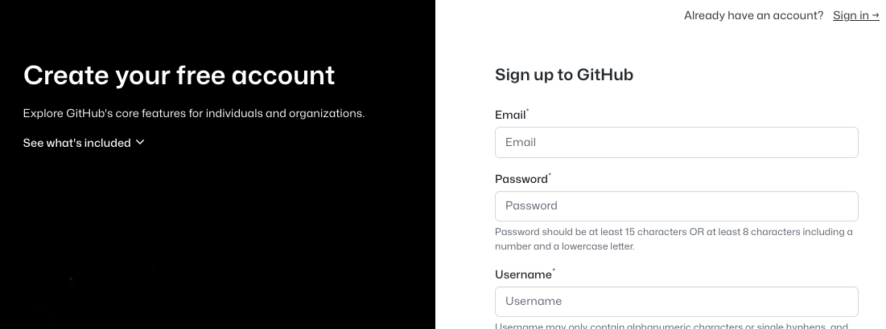
-
Complete the "Verify your account" puzzle to prove you're human.
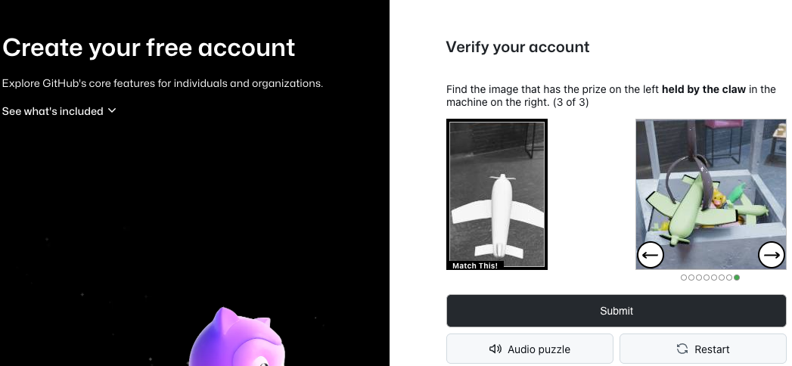
-
GitHub will send a verification code to your email address. Enter this code to confirm your email.
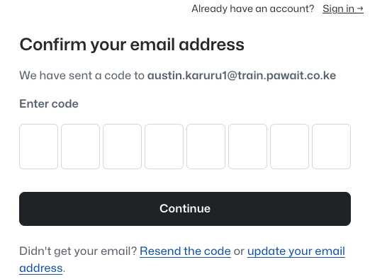
-
Once verified, proceed to sign in. Your new GitHub account is now ready!
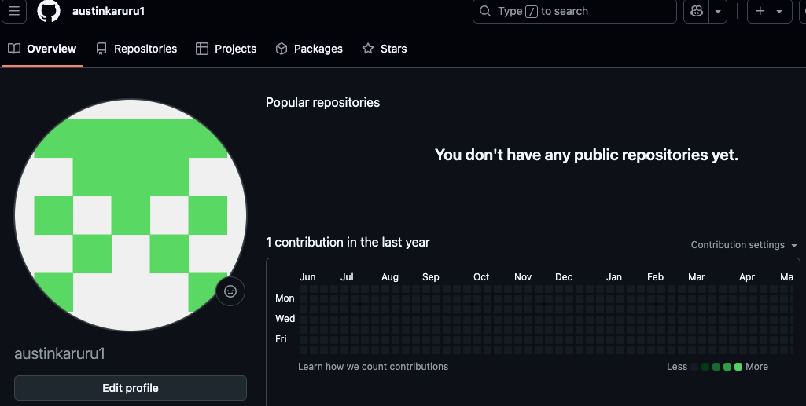
Fork the Backend Repository
You need your own copy of the application repository to make changes. This is done by "forking" it.
-
Access the Cloud Mastery backend repository here: https://github.com/Pawa-IT-Solutions/cloud-mastery-backend
-
Click the Fork button in the top-right corner.
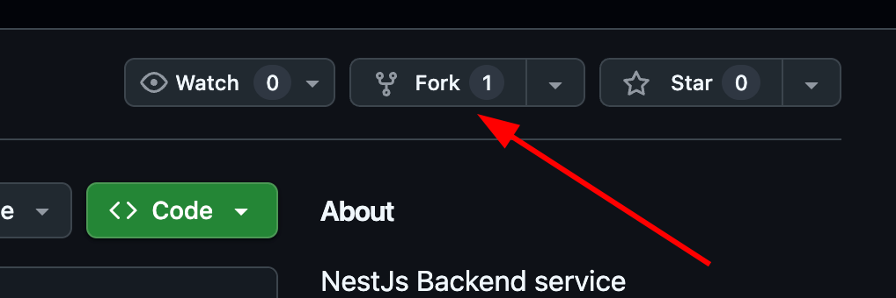
-
On the "Create a new fork" page, you can leave the details as they are and click Create fork.
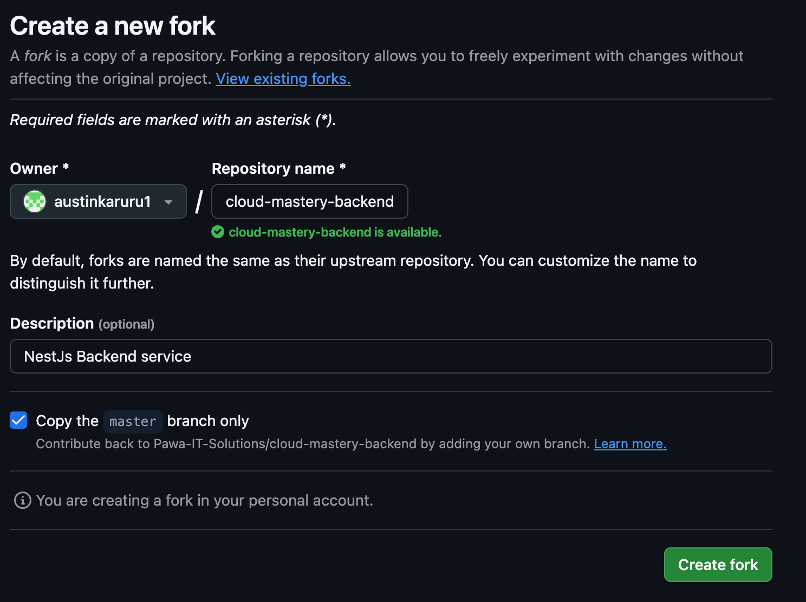
-
You will be redirected to your own forked copy of the repository. It is now ready!
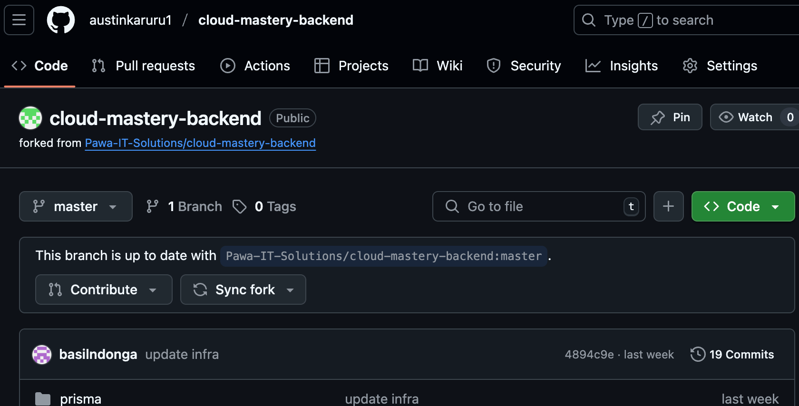
Configure Cloud Shell SSH Key
To securely clone the repository to your Cloud Shell, you need to add your Cloud Shell's SSH key to your GitHub account.
-
Navigate back to your Google Cloud Shell tab.
-
Run the
ssh-keygencommand to generate a new SSH key. PressEnterthree times to accept the default file location and create a key without a passphrase.ssh-keygen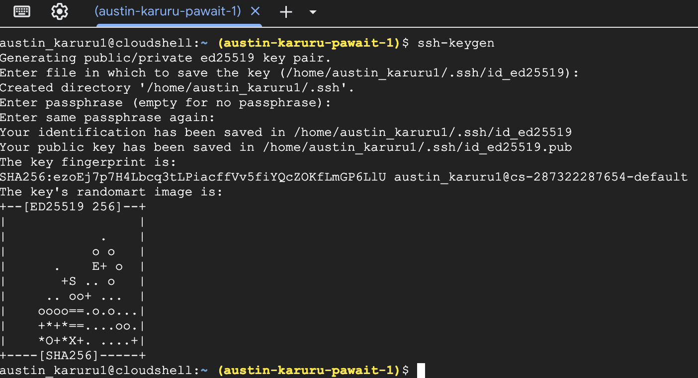 -
Verify that the public key file (
id_ed25519.pub) was created.ls -l .ssh/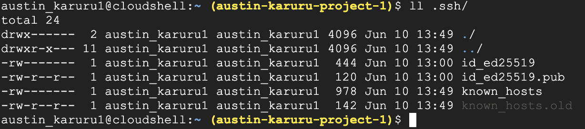 -
Display the public key and copy its entire content to your clipboard.
cat .ssh/id_ed25519.pub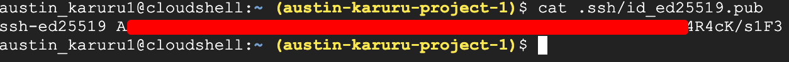 -
Head back to your GitHub tab. Click on your profile icon in the top-right corner and select Settings.
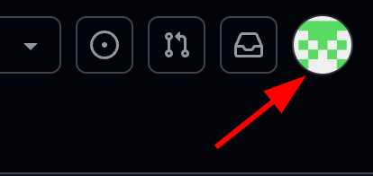 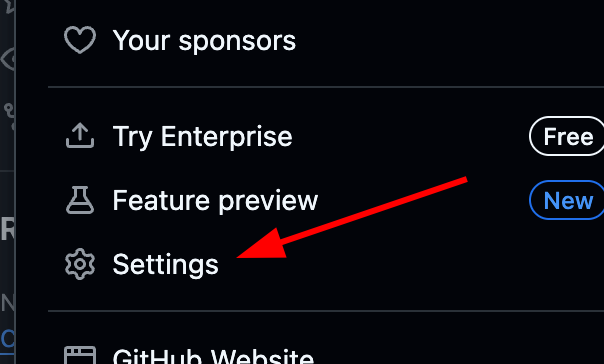
-
In the left navigation menu, click on SSH and GPG keys.
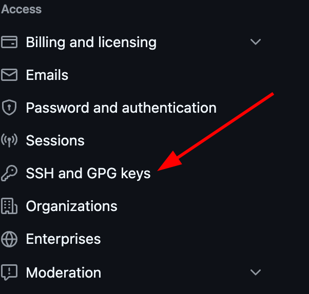
-
Click New SSH key. Give it a descriptive Title (e.g., "Google Cloud Shell") and paste the copied key into the Key field. Click Add SSH key.
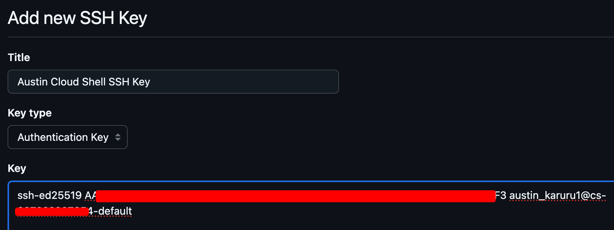
Clone the Repository to Cloud Shell
Now you can clone your forked repository.
-
In GitHub, navigate to your forked
cloud-mastery-backendrepository. Click the green <> Code button, select the SSH tab, and copy the SSH URL.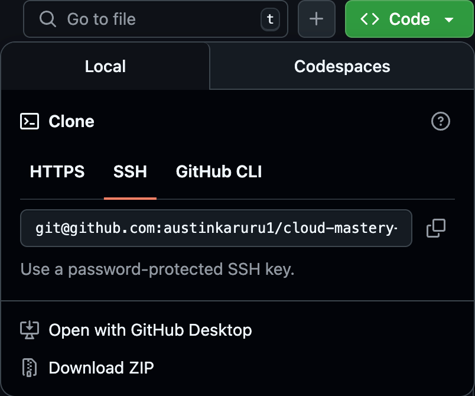
-
Go back to your Cloud Shell terminal and run the
git clonecommand, pasting the URL you just copied. Replace the URL with your own forked repository SSH URLgit clone git@github.com:austinkaruru1/cloud-mastery-backend.git -
When prompted
Are you sure you want to continue connecting (yes/no/[fingerprint])?, typeyesand pressEnter.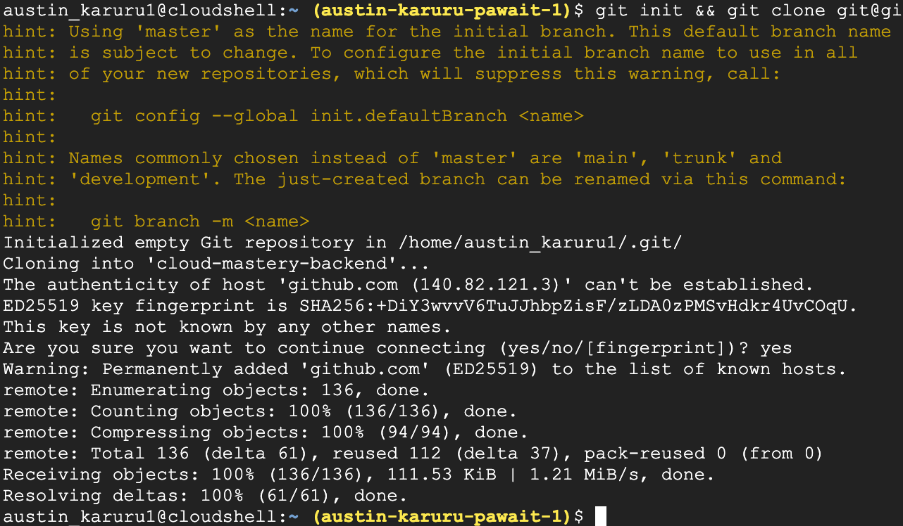
-
Navigate into the newly created directory and list its contents.
cd cloud-mastery-backend && ls -l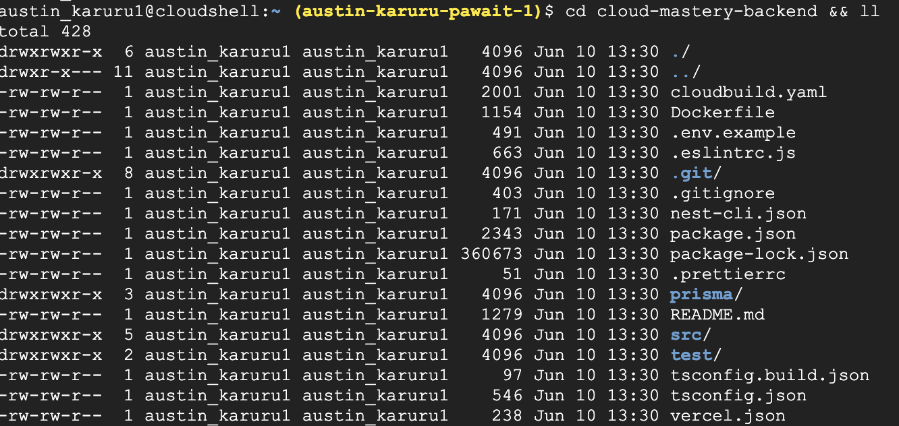
Great job! Your GitHub account is configured, and you have successfully cloned the backend application code into your Cloud Shell. Next, we will set up the continuous integration pipeline using Cloud Build.